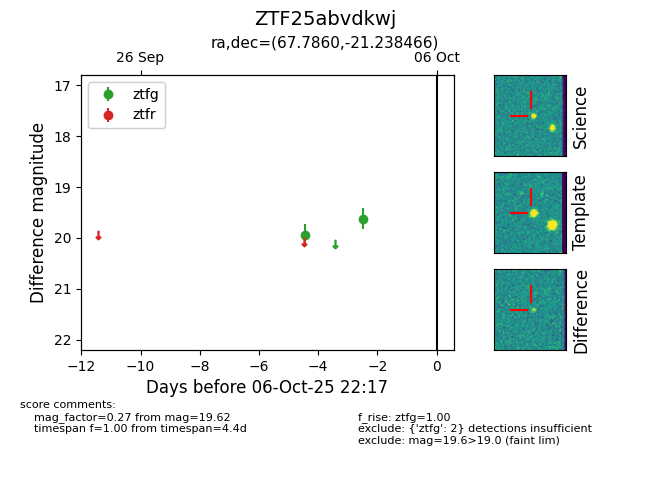

FINK: ZTF25abvdkwj
Lasair: ZTF25abvdkwj
ALeRCE: ZTF25abvdkwj
ZTF25abvdkwj (ztf,fink)
equatorial (ra, dec) = (67.7860,-21.23847)
galactic (l, b) = (218.7831,-39.93038)

last ztfg=19.62
2 ztfg detections